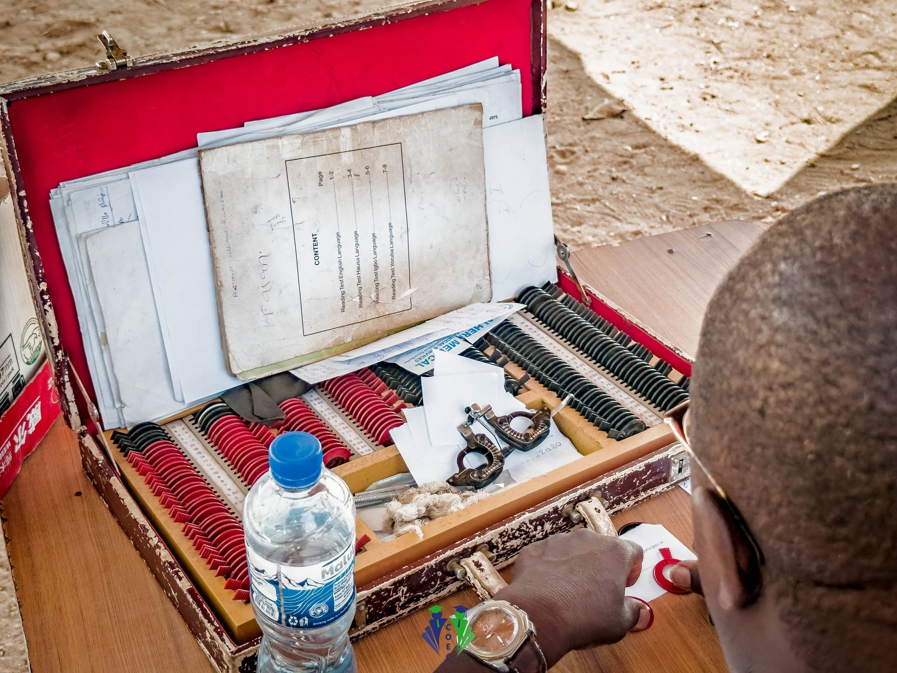
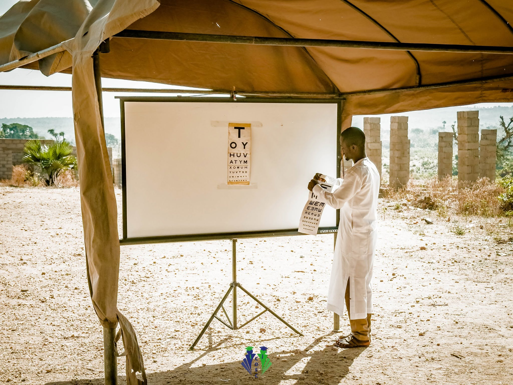
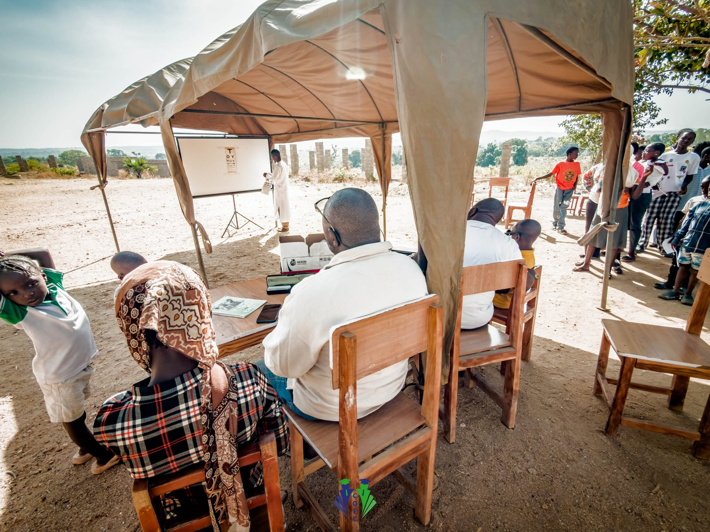

Paediatric vision care, piloted in Kaduna, Nigeria
Of the roughly 500 million people worldwide living with uncorrected refractive errors, nearly one-third are in Africa. I led a school-based vision care pilot in Kaduna to examine a deceptively simple question: how do you ensure children can actually access and use glasses when the barrier is not only affordability, but also identification, trust, fitting, and follow-through? The pilot aimed to identify the specific points of failure in the service journey and clarify what a reliable delivery model would require.


The pilot was delivered in partnership with COEC, whose school network in Samaru Kataf provided the trust, access, and operational foundation needed to run the programme. We worked in phases: advocacy and sensitisation, on-site screening, clinical assessment, custom production, fitting, and follow-up.
The school setting was central to making this work. It let us organise pupils efficiently, complete screenings on-site rather than asking families to travel, and involve teachers throughout the process rather than treating them as bystanders to it. Once prescriptions were confirmed, we worked with an eye hospital to produce the glasses, then returned to the school to fit them, orient beneficiaries on use and care, and establish teacher-led monitoring for follow-up, so the model didn't end at delivery.

The delivery model itself involved a real trade-off. We chose teacher-led monitoring rather than dedicated follow-up staff because it was the most practical way to sustain the service within the resources available. Teachers were already present every day, had direct access to the pupils, and could quickly notice whether glasses were being worn, whether there were fit issues, or whether a child appeared to be struggling. The cost was that this placed additional responsibility on school staff who already had full workloads, so the model depended on strong orientation, clear guidance, and ongoing coordination, rather than a more robust but far more expensive specialist follow-up system.
Delivered and evaluated in Kaduna, Nigeria. My longer-term interest is in testing different models for placing scarce resources where they create the most multiplier effect, run as a proper business with a trained, fairly paid team, not as a one-off donation drive.
The project report doesn't include a quantified outcome metric at retrospective, tracking longer-term impact, beyond delivery, is a gap the pilot surfaced rather than one it closed, and it's shaping what a proper follow-up model would need to measure.
The pilot moved us from a broad understanding of the problem to a clearer view of exactly where the service was breaking down. The next phase focuses on testing and strengthening the full delivery journey: how children are identified, how trust is built with parents and schools, how prescriptions are translated into fitted glasses, and how follow-up is sustained after distribution.
That starts with mapping the service in more detail, using the pilot findings to identify the most fragile points in the journey and the stakeholders most critical to making the model work, including deeper conversations with teachers, parents, and clinicians, and a closer look at the operational steps between screening and consistent use. The goal is a model that's not just clinically sound, but practical, trusted, and workable within the realities of a rural school environment.
Post-distribution compliance is a key focus. The pilot showed that getting glasses into children's hands is only part of the work, ensuring they're worn, maintained, and accepted by families matters just as much. The next phase explores teacher-led monitoring, stronger parent sensitisation, and simpler support processes that can sit inside everyday school routines without creating unsustainable pressure on staff.
We're also using what this pilot taught us to refine the service model itself: how much community engagement is needed before screening, what handoff process drives the strongest uptake, and what follow-up structure is realistic given the resources available. The pilot wasn't the finish line, it was the first step toward a service that can be repeated, scaled, and sustained.